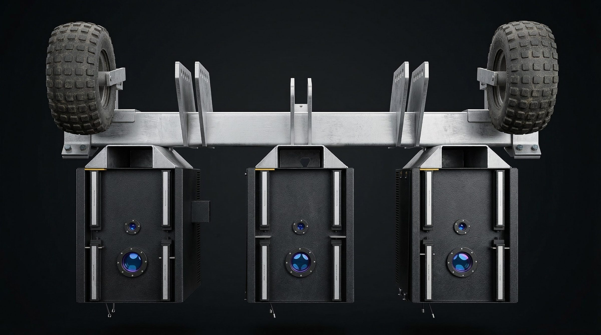
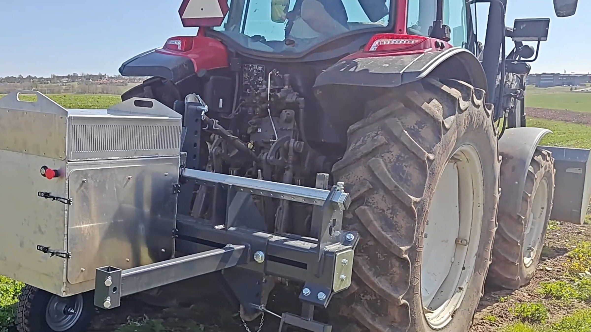
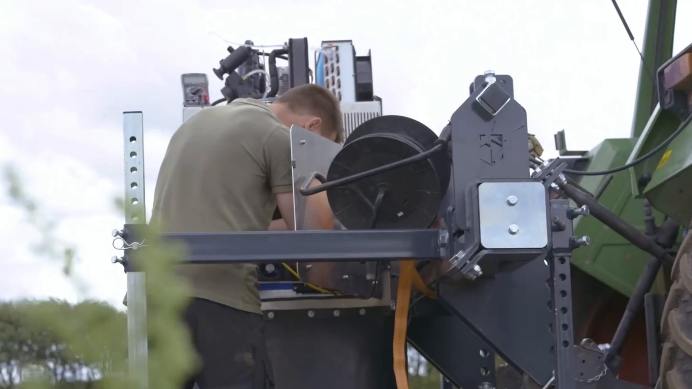

Ecoray
Laserlugning inde i rækken. Uden kemi.

Afprøvet i marken
Målt i markforsøg i danske grøntsagsmarker.
96,5 %af ukrudtet fundet
5–25 mmUkrudtet rammes i kimbladsstadiet
0 lkemi i rækken
Passer til den traktor, du har
Ecoray sidder i traktorens trepunktsophæng og kører på sine egne støttehjul. Vælg 2 til 10 moduler, der hver dækker 60 cm arbejdsbredde. To moduler kan køre på en traktor fra ca. 30 hk.

Find. Sigt. Fjern.
Kameraer og AI finder hver ukrudtsplante i kimbladsstadiet og retter laseren mod vækstpunktet, helt tæt på din afgrøde.

Udviklet i Aarhus
Udviklet, bygget og testet i marken i Danmark til europæiske avlere.